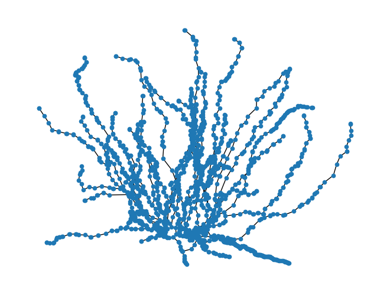
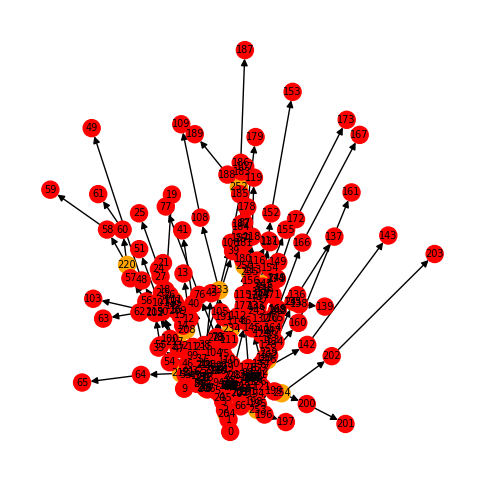
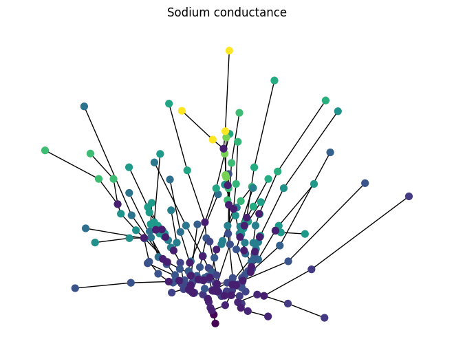
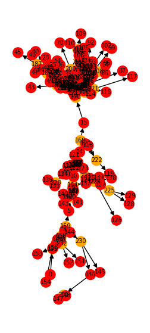
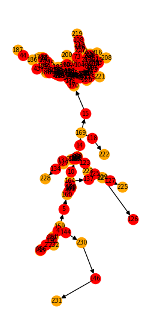
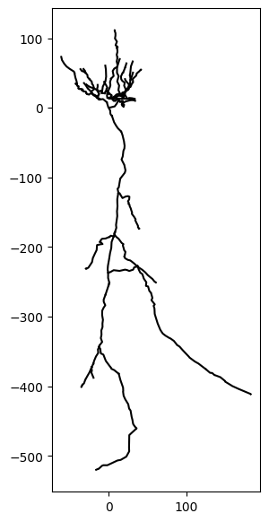
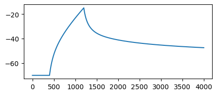
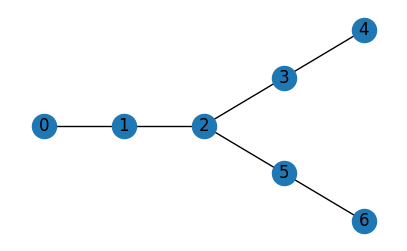
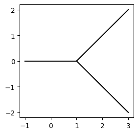

The graph backend¶
In this tutorial, you will learn how to use Jaxleys graph pipeline, which offers interoperability with networkX. We will:
- define morphologies via networkX graphs.
- export morphologies to networkX graphs.
- import morphologies using Jaxley’s graph pipeline.
Here is a code snippet which you will learn to understand in this tutorial:
import jaxley as jx
import networkx as nx
from jaxley.io.graph import (
to_swc_graph, build_compartment_graph, vis_compartment_graph, from_graph
)
from jaxley.modules.base import to_graph
# Import cell from SWC via the graph-backend.
swc_graph = to_swc_graph("tests/swc_files/morph.swc")
comp_graph = build_compartment_graph(swc_graph, ncomp=1)
cell = from_graph(comp_graph)
# Export cell to the graph-backend.
comp_graph = to_graph(cell)
vis_compartment_graph(comp_graph)
While swc is a great way to save, load and specify complex morphologies, often more flexibility is needed. In these cases, graphs present a natural way to represent and work with neural morphologies, allowing for easy fixing, pruning, smoothing and traversal of neural morphologies. For this purpose, Jaxley comes with a networkX toolset that allows for easy interoperability between networkX graphs and Jaxley Modules.
To work with complex morphologies, jaxley.io.graph provides a way to import swc reconstructions as graphs:
from jaxley.io.graph import to_swc_graph
fname = "data/morph.swc"
swc_graph = to_swc_graph(fname)
A major advantage of this is that having imported an swc file as a graph allows to fix, prune, or smooth the morphology. As an example, we remove the apical dendrites of a morphology that we read from swc:
import networkx as nx
# manipulate the graph
ids = nx.get_node_attributes(swc_graph, "id")
ids = {k: v for k, v in ids.items() if v != 4} # Apical dendrite has `id=4`: http://www.neuronland.org/NLMorphologyConverter/MorphologyFormats/SWC/Spec.html
swc_graph = nx.subgraph(swc_graph, ids).copy()
We can then visualize the remaining morphology:
pos = {k: (v["x"], v["y"]) for k, v in swc_graph.nodes.items()}
nx.draw(swc_graph.to_undirected(), pos=pos, node_size=20)

Next, we compartmentalize this graph. To this end, build_compartment_graph() segments the SWC graph into branches and divides the branches up into compartments.
from jaxley.io.graph import build_compartment_graph
comp_graph = build_compartment_graph(swc_graph, ncomp=2)
You can view the compartment structure as follows:
import matplotlib.pyplot as plt
from jaxley.io.graph import vis_compartment_graph
print(f"node attributes {comp_graph.nodes[0]}")
print(f"edge attributes {comp_graph.edges[(0, 1)]}")
fig, ax = plt.subplots(1, 1, figsize=(6, 6))
vis_compartment_graph(comp_graph, ax=ax)
node attributes {'x': 2.311556339263916, 'y': -8.913771629333496, 'z': 0.0, 'branch_index': 0, 'comp_index': 0, 'type': 'comp', 'xyzr': array([[ 4.06 , -11.45 , 0. , 2.6 ],
[ 3. , -10.35 , 0. , 3.86 ],
[ 2.74 , -9.85 , 0. , 4.019 ],
[ 2.2 , -8.67 , 0. , 4.34 ],
[ 2.17 , -8.49 , 0. , 4.34 ],
[ 1.99 , -7.26 , 0. , 5.81 ],
[ 1.98 , -6. , 0. , 6.28 ],
[ 1.96899895, -5.83329182, 0. , 6.36039227]]), 'groups': ['soma'], 'radius': 4.542392560157545, 'length': 6.241557163671718, 'cell_index': 0}
edge attributes {}

In the graph above, red points indicate compartments and orange points indicate branchpoints.
Now, let’s import this graph into Jaxley. We use the from_graph() function to convert the graph into a Cell object, which Jaxley can then simulate or optimize.
from jaxley.io.graph import build_compartment_graph, from_graph
from jaxley.channels import HH
cell = from_graph(comp_graph)
# The resulting cell can be treated like any Jaxley cell.
# As an example, we add HH and change parameters for visualization.
cell.insert(HH())
for branch in cell:
y_pos = branch.xyzr[0][0,1]
branch.set("HH_gNa", 0.5 + 0.5 * y_pos)
Jaxley also offers the option to export any Module to a networkX graph object:
from jaxley.modules.base import to_graph
comp_graph = to_graph(cell, channels=True)
Exporting a Jaxley cell to a graph provides another way to store or share the current Module state, since to_graph attaches all relevant attributes to the nodes and eges of the graph. It can also be used to make more complex visualizations: for example, we can visualize the channel density of each compartment as below:
# plot of the cell, coloring each node according to the sodium conductance
pos = {k: (v["x"], v["y"]) for k, v in comp_graph.nodes.items()}
colors = []
for n in comp_graph.nodes:
if "HH_gNa" in comp_graph.nodes[n]:
# Color of compartments should scale with HH_gNa.
colors.append(comp_graph.nodes[n]["HH_gNa"])
else:
# Branchpoints have no channels.
colors.append(0.0)
nx.draw(comp_graph.to_undirected(), pos=pos, node_color=colors, cmap="viridis", with_labels=False, node_size=50)
plt.title("Sodium conductance")
plt.show()

Editing morphologies¶
To edit morphologies, Jaxley provides delete_morph and attach_morph. If these do not provide enough flexibility, you can use the graph-backend to modify morphologies. As an example, we will trim all tip dendrites that are shorter than 250 \(\mu\)m.
First, we import the SWC file as a compartment graph:
from jaxley.io.graph import to_swc_graph, build_compartment_graph
swc_graph = to_swc_graph(fname)
comp_graph = build_compartment_graph(swc_graph, ncomp=1)
Let’s visualize it:
from jaxley.io.graph import vis_compartment_graph
fig, ax = plt.subplots(1, 1, figsize=(3, 7))
vis_compartment_graph(comp_graph, ax=ax)

Next, we loop over all nodes. We want to keep nodes only if they made any of the following conditions:
- if a node has more than one neighbor (degree > 1),
- if its compartment length is > 250 \(\mu\)m, or
- if it is a soma.
import networkx as nx
nodes_to_keep = []
for node in comp_graph.nodes:
degree = comp_graph.in_degree(node) + comp_graph.out_degree(node)
condition1 = degree > 1
condition2 = comp_graph.nodes[node]["length"] > 250.0
condition3 = "soma" in comp_graph.nodes[node]["groups"]
if condition1 or condition2 or condition3:
nodes_to_keep.append(node)
comp_graph = nx.subgraph(comp_graph, nodes_to_keep)
We can again visualize the trimmed graph:
fig, ax = plt.subplots(1, 1, figsize=(3, 7))
vis_compartment_graph(comp_graph, ax=ax)

After we are done, we can import the graph as a jx.Cell with the from_graph method:
from jaxley.io.graph import from_graph
cell = from_graph(comp_graph)
…and we can also visualize the remaining morphology:
fig, ax = plt.subplots(1, 1, figsize=(3, 7))
_ = cell.vis(ax=ax)

…and we can run simulations as always:
import jaxley as jx
cell.delete_recordings()
cell.delete_stimuli()
cell.soma.branch(0).comp(0).record()
cell.soma.branch(0).comp(0).stimulate(jx.step_current(10.0, 20.0, 0.1, 0.025, 100.0))
Added 1 recordings. See `.recordings` for details.
Added 1 external_states. See `.externals` for details.
v = jx.integrate(cell)
fig, ax = plt.subplots(1, 1, figsize=(5, 2))
_ = ax.plot(v.T)

Building graphs from scratch¶
Finally, you can even build graphs completely from scratch in networkX and then import them as a Jaxley module:
import networkx as nx
nodes = {
0: {"id":1, "x": -1, "y": 0, "z": 0, "r": 0.2},
1: {"id":1, "x": 0, "y": 0, "z": 0, "r": 0.2},
2: {"id":1, "x": 1, "y": 0, "z": 0, "r": 0.2},
3: {"id":1, "x": 2, "y": 1, "z": 0, "r": 0.1},
4: {"id":1, "x": 3, "y": 2, "z": 0, "r": 0.1},
5: {"id":1, "x": 2, "y": -1, "z": 0, "r": 0.1},
6: {"id":1, "x": 3, "y": -2, "z": 0, "r": 0.1},
}
edges = ((0, 1),(1, 2),(2, 3),(3, 4),(2, 5),(5, 6))
g = nx.DiGraph()
g.add_nodes_from(nodes.items())
g.add_edges_from(edges, l=1)
# Setting any of these attributes is optional. It is sufficient to define the
# connectivity and simply do g = nx.DiGraph(edges). In this case, r and l will
# be set to default values and x, y, z can be computed using Cell.compute_xyz().
import matplotlib.pyplot as plt
fig, ax = plt.subplots(1, 1, figsize=(5, 3))
nx.draw(g.to_undirected(), pos={k: (v["x"], v["y"]) for k, v in nodes.items()}, with_labels=True, ax=ax)

We can then use io.graph to import such a graph into a jx.Module using the from_graph method:
from jaxley.io.graph import build_compartment_graph, from_graph
comp_graph = build_compartment_graph(g, ncomp=2)
cell = from_graph(comp_graph)
cell.vis()
plt.show()

Congrats! You have now learned how to interface with networkX to further customize and manipulate imported morphologies.